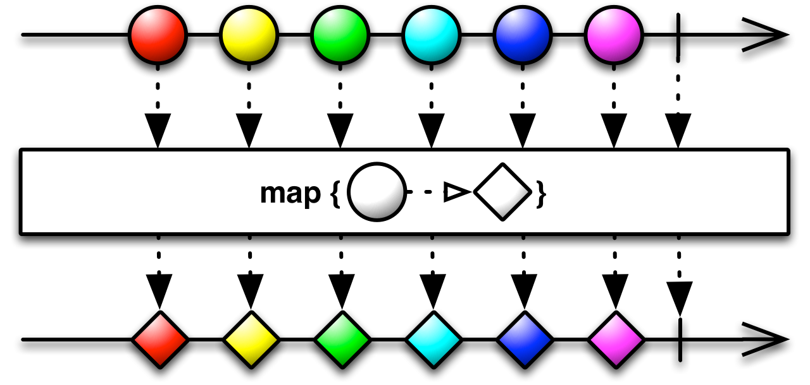

Rx链式调用实现
通过不同的操作符，可以复杂的rx链式调用，比如
Observable.just(10)
.map { integer -> integer!!.toString() }
.subscribeOn(Schedulers.io())
.map { s -> "$s=>map" }
.observeOn(AndroidSchedulers.mainThread())
.map { s -> "$s=>map2" }
.subscribeOn(Schedulers.newThread())
.map { s -> "$s=>map3" }
.observeOn(Schedulers.computation())
.subscribe { s -> Log.i("RX", s) }
直观的可以看到，Observable可以不断通过点语法调用下一个操作符，整个代码非常扁平。
这和Builder模式使用非常像，但是他和buidler是有本质差异的。
可观测实例生成情况
先看第一个问题：
Observable的连续操作符是作用在同一个实例上吗？
既然我这么问了，从概率上来讲肯定要回答不是的。确实也不是，要验证这一点非常简单，
- 输出每一次操作符后的Observable对象，通过hash值判断；
- 通过分析内存中Observable的对象实例个数判断；
I/RX: rx.internal.util.ScalarSynchronousObservable@970b05
I/RX: rx.Observable@89675a
I/RX: rx.Observable@1e69f26
I/RX: rx.Observable@1138767
I/RX: rx.Observable@93c3914
I/RX: rx.Observable@18095bd
I/RX: rx.Observable@e8d87b2
从对象实例hash可以发现，所以打印的Observable对象地址都不同，这说明：
Observable链式调用过程中在不断创建新的Observable用于下一个操作符
更进一步分析对象实例个数，可以知道，几乎所有操作胡都会产生新的Observable对象。比如前面的Demo，
- 一共产生了9个Observable可观测实例对象;
- 不同操作符产生的实例对象的实现类不一定相同，和源码实现有关；
Observable有什么
第二个问题
Observable到底是个啥？它里面有什么东西？
从命名上来说Observable是=>可观察的，在Rxjava中，基本等价于是开发API的唯一入口类，这个比较好理解，就像SDK一样，通过Observable一个类，我们可以触达几乎Rx的所有能力（hook机制除外，他不是业务调用的核心，只是一种配置）。
它里面的东西很多，主要是以下几种类型：
- 大量操作符函数，提供了系列操作符的静态方法
- 定义了OnSubscribe，Operator，Transformer
- subscribe订阅方法
- 唯一的成员变量OnSubscribe
在subscribe执行后会触发的OnSubscribe的call方法，类似于点击操作后，触发了OnClickLister的onClick方法吧
操作符实现
第三个问题
操作符是怎么实现的？
在上述Observable内存查看的时候，注意到一点，不同操作符生成的对象的内部引用onSubscribe是不同的，比如前面的9个实例中就有三种：
- JustOnSubscribe
- OnSubscribeMap
- OperatorSubscribeOn
- OnSubscribeLift
下面我们看下操作符的实现情况，以map为例。
在分析之前，先同步一下关键概念

类似的图出现在每一个Rx的操作符API说明文档，为例方便理解简单解释一下几个关键点：
- Observable时间线：被观测对象的时间线，被观测对象（即Observable）可以根据自身情况不断发射事件出来，也可以发射单次事件就结束，比较常见的网络请求封装，即为一次发射。
- Operator操作符：中间的箭头线和黑框，合在一起可以理解为对Observable做了一次操作符运算，单次操作运算可以理解为一次Transformation，比如flip，map，filter等。
- 链式操作：每一次操作符之后，返回值是一个新的可观测对象Observable，可以开始新的一轮操作，或者结束操作，订阅结果
- Observer观察者：最终通过subsribe操作，我们传入一个观察者，用于处理最后的返回值，观察者可以视为另一个广为人知的概念：监听器Listerner。
下面我们分析下map操作符，正如其名，map的作用就是对观测对象发射出的每一个事件，做一次"映射操作"，单次返回值可以是新的数据类型，最后返回待map能力的Observable对象。

在源码实现层面，map的操作符有以下两步：
创建OnSubscribeMap对象，他是包装了map方法的OnSubscribe的具体实现类
调用Observable的构造函数，传入OnSubscribeMap的hook对象
关于hook相关的我们暂不分析，后续会用专门章节介绍他的实现，现在核心就是OnSubscribeMap的实现了。
总结一下调用关系：
- Observable的map实例化OnSubscribeMap对象
- OnSubscribeMap为OnSubscribe的一个实现类，subscribe后最终触发其call方法
- ObSubscribeMap的call中，实例化MapSubsriber对象，MapSubscriber是Subscriber的一个实现类，相当于一个中间层代理对象，在其onNext中执行map操作，并最终执行下一层的Subscriber
总结一下，整个map的精简流程：
每一个map操作符都会生成一个OnSubScibeMap对象，并在内部call的时候再生成代理对象MapSubsriber，实现对map的处理和下一层Subscriber的触发动作
整个实现情况也印证了一句话，任何软件问题都可以通过增加中间层来解决。
小结
map操作符的实现就是通过引入OnSubScibeMap中间层和MapSubscriber代理对象，实现提前map操作。